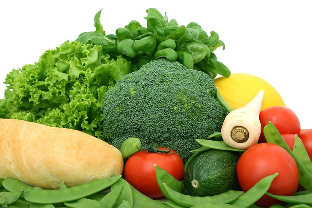

Attributes are additional information about html elements
Learn moreHTML links (also known as hyperlinks) are used to navigate from one page to another or to different sections within a page. The tag defines a hyperlink, and the href attribute specifies the destination address. Links are as useful as attibutes
Fruit is a product of plant growth (such as grain, vegetables, or cotton)

Vegetables are parts of plants that are consumed by humans or other animals as food. Fruits and vegetables are healthy
